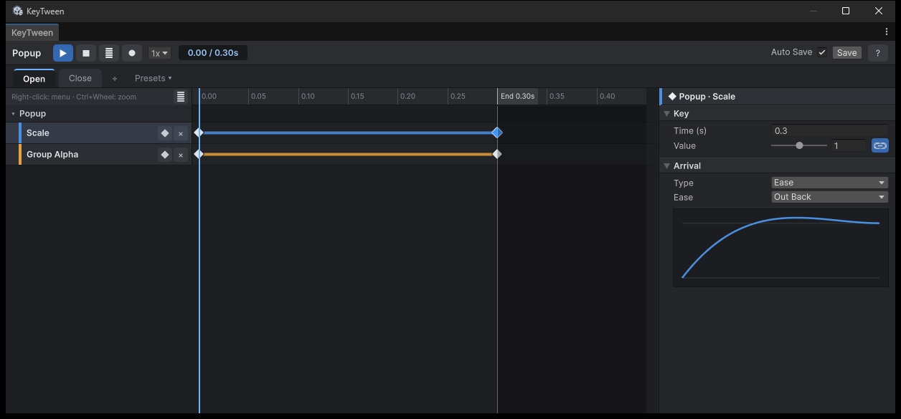

AI 에이전트로 만들기
Claude Code, Cursor, Codex 같은 코딩 에이전트에게 연출을 말로 맡길 수 있습니다. 에이전트가 만든 결과는 사람이 만든 것과 같은 상태, 트랙, 키입니다. 그래서 KeyTween 창에서 그대로 열어 키를 끌고, 이징을 바꾸고, 미리 보며 이어서 고칩니다.
KeyTween에는 AI 모델이 들어 있지 않습니다. 에이전트가 애니메이션 데이터를 읽고 쓰는 명령과, 그 형식을 설명하는 계약 문서를 제공합니다. 어떤 에이전트를 쓸지는 사용자가 고릅니다.
준비하기
필요한 것은 Unity 6과 Unity CLI 패키지(com.unity.pipeline)입니다. Unity CLI가 없어도 KeyTween은 그대로 동작하고, 명령만 빠집니다.
- Unity CLI 패키지를 설치합니다. 프로젝트 폴더에서
unity pipeline install을 실행합니다. Unity Hub에서 새 프로젝트를 만들 때 Unity CLI 사용을 체크했다면 이미 들어 있으므로 건너뜁니다. 설치되면 KeyTween의 명령이 자동으로 컴파일됩니다. - Tools > KeyTween > Set Up Agent Access를 고릅니다. 프로젝트 폴더의
AGENTS.md와CLAUDE.md에 KeyTween 구역이 들어가고, 에이전트는 거기서 명령과 계약 문서를 읽는 방법을 알게 됩니다.- 다시 골라도 구역은 하나만 남습니다.
- 패키지를 업데이트한 뒤에는 한 번 더 골라 계약 문서의 파일 경로를 새로 적습니다. 명령
keytween_contract는 업데이트와 상관없이 동작합니다.
- Unity 에디터를 연 채로 에이전트에게 요청합니다.
Assets/UI/Popup.prefab에 열릴 때 살짝 작은 크기에서 커지며 나타나는 Open과,
조금 작아지며 사라지는 Close를 만들어 줘. Close는 Open보다 짧게. 내 코드에서 재생할 거야.
MCP 클라이언트에서 쓰려면 unity mcp configure <클라이언트>로 Unity CLI를 MCP 서버로 등록합니다. 지원하는 클라이언트는 unity mcp configure --list로 봅니다.
만들어지는 것
에이전트는 Prefab을 읽고(keytween_read), 만든 상태를 써 넣습니다(keytween_write_prefab). 아래는 위 요청을 받은 에이전트가 만든 Open 상태를 KeyTween 창에서 연 모습입니다. 팝업의 Scale과, 팝업 전체를 페이드하는 Group Alpha 트랙이 들어 있고, 끝 키를 고르면 값과 이징을 바로 바꿀 수 있습니다. 팝업에 CanvasGroup이 없어서 쓰기 명령이 붙였습니다.

- 상태는 Prefab 안에 저장됩니다. 에디터에서 만든 상태와 구별되지 않습니다.
- 코드에서는 이름으로 재생합니다:
await popup.PlayAsync("Open") - 마음에 들지 않는 부분은 KeyTween 창에서 고치거나, 에이전트에게 다시 요청합니다. 에이전트는 다시 읽고 그 위에서 고칩니다.
- KeyTween 창은 Window > KeyTween Editor로 엽니다. Prefab을 열거나 씬에서 그 오브젝트를 고르면 상태가 나옵니다.
명령
읽기와 두 가지 쓰기가 따로 있어서, 읽기만 허용하거나 씬 수정만 허용할 수 있습니다.
| 명령 | 바꾸는 것 | 설명 |
|---|---|---|
keytween_contract |
없음 | 계약 문서(형식과 규칙)를 설치된 버전 그대로 돌려줍니다. 에이전트가 처음 쓰기 전에 읽습니다. |
keytween_read |
없음 | 대상의 상태(트랙, 키, Play On)와, 움직일 수 있는 오브젝트·트랙 목록을 JSON 문서로 돌려줍니다. 대상을 주지 않으면 열린 씬과 Prefab 모드의 KeyTween 목록을 돌려줍니다. |
keytween_write_scene |
열린 씬의 오브젝트 | 메모리에서만 바꿉니다. 씬은 저장되지 않은 상태로 표시되고, 이 명령은 씬을 저장하지 않습니다. |
keytween_write_prefab |
Prefab 애셋 | 그 Prefab의 모든 인스턴스에 적용되고 저장됩니다. Prefab 모드에 열려 있으면 열린 오브젝트를 바꾸고, 저장은 KeyTween 창의 Auto Save 또는 Save를 따릅니다. |
unity --json command keytween_read --target Assets/UI/Button.prefab
unity --json command keytween_write_prefab --file Temp/hover.json --dry_run true
unity --json command keytween_write_prefab --file Temp/hover.json
--json을 붙이면 결과가 JSON으로 나오고, 읽은 문서는 그 안의 data.result에 있습니다. 붙이지 않으면 표 형식으로 나와 줄바꿈이 사라집니다.
대상은 KeyTween이 있는(또는 붙일) 오브젝트입니다. Prefab 애셋은 Assets/UI/Button.prefab, 그 안의 오브젝트는 Assets/UI/Popup.prefab:Panel/OkButton, 열린 씬의 오브젝트는 /Canvas/Button으로 적습니다.
안전 장치
사람과 에이전트가 같은 데이터를 고치므로, 서로의 작업을 덮어쓰지 않게 합니다.
- 읽은 뒤에 바뀌었으면 거부합니다. 읽기는 토큰을 돌려주고, 쓰기는 그 토큰을 함께 보냅니다. 그 사이에 사람이 고쳤거나 다른 쓰기가 있었으면 쓰기를 거부하므로, 에이전트는 다시 읽고 그 문서에서 다시 고칩니다.
- 전부 적용하거나 전혀 적용하지 않습니다. 없는 경로, 없는 트랙, 개수가 틀린 값, 없는 이징 이름을 한 번에 모두 알려 주고 아무것도 바꾸지 않습니다. 트랙 자체가 틀렸으면 그 트랙의 키는 검사하지 않습니다.
- Ctrl+Z 한 번으로 되돌립니다. 컴포넌트 추가와 Play On 설정까지 하나의 Undo 단계입니다.
- 확인만 할 수 있습니다.
--dry_run true는 문서를 검사하고 무엇이 바뀔지만 알려 줍니다. - Play 모드에서는 쓰지 않습니다. 열려 있지 않은 씬을 대신 열지도 않습니다.
할 수 있는 것과 없는 것
- 쓸 수 있는 것: 상태 만들기·바꾸기·지우기, 반복, Play On, 트랙(내장, Material, 커스텀), 키와 도착 방식, 애니메이션 이벤트
- 그대로 남기는 것: 사운드, 자식 호출, 콜백. 상태를 바꿔 써도 지워지지 않습니다.
- 지원하지 않는 것: 오버라이드, 상태 이름 바꾸기
- 명령이 추가하는 컴포넌트는
KeyTween, Play On용KeyTweenTrigger, 묶음 페이드용CanvasGroup셋뿐입니다.CanvasGroup은CanvasGroupAlpha트랙이 움직이는 UI 오브젝트에 없을 때만 붙고, 같은 Undo 단계에 들어갑니다. 그래서 팝업 전체의 페이드가 트랙 하나로 만들어집니다(여러 오브젝트를 함께 페이드하기).
형식과 규칙은 패키지의 Editor/Agent/KEYTWEEN-CONTRACT.md에 있고, unity --json command keytween_contract로도 읽습니다. 필드 이름을 잘못 적으면 그 필드는 무시되고 기본값이 쓰이므로, 에이전트에게는 --dry_run true로 먼저 확인하게 하는 편이 안전합니다.
다른 경로에서 부르기
명령은 KeyTweenAgent의 공개 메서드를 감싼 것입니다. Unity CLI를 쓰지 않는 도구는 에디터 코드에서 직접 부를 수 있습니다.
using KeyTweening.Editor;
string contract = KeyTweenAgent.ContractText();
KeyTweenAgentDocument doc = KeyTweenAgent.Read("Assets/UI/Button.prefab");
KeyTweenAgentResult result = KeyTweenAgent.Write(json, KeyTweenAgentScope.Prefab, dryRun: true);